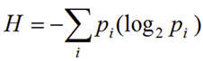

Decision Tree with python¶
Pengertian¶
Decision Tree (Pohon Keputusan) adalah pohon dimana setiap cabangnyamenunjukkan pilihan diantara sejumlah alternatif pilihan yang ada, dan setiapdaunnya menunjukkan keputusan yang dipilih.Decision tree biasa digunakan untuk mendapatkan informasi untuk tujuanpengambilan sebuah keputusan. Decision tree dimulai dengan sebuah root node(titik awal) yang dipakai oleh user untuk mengambil tindakan. Dari node root ini,user memecahnya sesuai dengan algoritma decision tree. Hasil akhirnya adalahsebuah decision tree dengan setiap cabangnya menunjukkan kemungkinan sekenario dari keputusan yang diambil serta hasilnya .
Contoh Pemanfaatan Decision Tree¶
-
Diagnosa beberapa penyakit seperti kanker, hipertensi, stroke.
-
Menentukan apakah dengan kondisi yang ada layak untuk bermaintenis atau tidak
-
Menentukan apakah sebuah investasi bisnis layak dilakukan atau tidak
-
Pemilihan pegawai teladan sesuai dengan kriteria tertentu
-
Deteksi gangguan pada komputer atau jaringan komputer
-
Pemilihan produk seperti rumah, kendaraan dan lain lain

Kelebihan dan Kekurangan Decision Tree Classification¶¶
Kelebihan:¶¶
- Daerah pengambilan keputusan yang sebelumnya kompleks dan sangat global, dapat diubah menjadi lebih simpel dan spesifik.
- Eliminasi perhitungan-perhitungan yang tidak diperlukan, karena ketika menggunakan metode pohon keputusan maka sample diuji hanya berdasarkan kriteria atau kelas tertentu.
- Fleksibel untuk memilih fitur dari internal node yang berbeda, fitur yang terpilih akan membedakan suatu kriteria dibandingkan kriteria yang lain dalam node yang sama. Kefleksibelan metode pohon keputusan ini meningkatkan kualitas keputusan yang dihasilkan jika dibandingkan ketika menggunakan metode penghitungan satu tahap yang lebih konvensional
- Dalam analisis multivariat, dengan kriteria dan kelas yang jumlahnya sangat banyak, seorang penguji biasanya perlu untuk mengestimasikan baik itu distribusi dimensi tinggi ataupun parameter tertentu dari distribusi kelas tersebut. Metode pohon keputusan dapat menghindari munculnya permasalahan ini dengan menggunakan criteria yang jumlahnya lebih sedikit pada setiap node internal tanpa banyak mengurangi kualitas keputusan yang dihasilkan.
Kekurangan:¶¶
-
Terjadi overlap terutama ketika kelas-kelas dan criteria yang digunakan jumlahnya sangat banyak. Hal tersebut juga dapat menyebabkan meningkatnya waktu pengambilan keputusan dan jumlah memori yang diperlukan.
-
Pengakumulasian jumlah eror dari setiap tingkat dalam sebuah pohon keputusan yang besar.
-
Kesulitan dalam mendesain pohon keputusan yang optimal.
-
Hasil kualitas keputusan yang didapatkan dari metode pohon keputusan sangat tergantung pada bagaimana pohon tersebut didesain.
Algoritma Decision Tree Classification¶¶
- ID3
- Gini Index
- Chi-Square
- Reduction in Variance
Namun disini kita hanya membahas ID3 dan Gini index saja.
Untuk mendapatkan nilai Information Gain dan Gain Ratio, terlebih dahulu kita harus menghitung nilai entropy. Eentropy digunakan untuk mengukur nilai ketidak murnian sekumpulan objek pada setiap cabang pada suatu atribut. Mila(2015) menyatakan rumus Entropy terdapat pada persamaan :

Algoritma ID3 menggunakan entropi untuk menghitung homogenitas sampel. Jika sampel benar-benar homogen, entropinya nol dan jika sampel dibagi sama rata, maka entropinya satu.
Kami akan menggunakan implementasi yang disediakan oleh kerangka pembelajaran mesin python yang dikenal sebagai scikit-belajar untuk memahami Pohon Keputusan.
Implementasi dalam Python¶
import os import numpy as np import pandas as pd import numpy as np, pandas as pd import matplotlib.pyplot as plt from sklearn import tree, metrics
#### Langkah pertama # Impor data data = pd.read_csv('data/car_quality/car.data',names=['buying','maint','doors','persons','lug_boot','safety','class']) data.head()
Identifikasi target variabel¶
data['class'],class_names = pd.factorize(data['class'])
Identifikasi variabel prediktor dan encode variabel string apa pun ke kode integer yang setara¶
data['buying'],_ = pd.factorize(data['buying']) data['maint'],_ = pd.factorize(data['maint']) data['doors'],_ = pd.factorize(data['doors']) data['persons'],_ = pd.factorize(data['persons']) data['lug_boot'],_ = pd.factorize(data['lug_boot']) data['safety'],_ = pd.factorize(data['safety']) data.head()
Pilih fitur prediktsi dan variabel target¶
X = data.iloc[:,:-1] y = data.iloc[:,-1]
Train test split:¶
X_train, X_test, y_train, y_test = model_selection.train_test_split(X, y, test_size=0.3, random_state=0)
Training/model fitting¶
dtree = tree.DecisionTreeClassifier(criterion='entropy', max_depth=3, random_state=0) dtree.fit(X_train, y_train)
Studi parameter model:¶
# use the model to make predictions with the test data
y_pred = dtree.predict(X_test)
# how did our model perform?
count_misclassified = (y_test != y_pred).sum()
print('Misclassified samples: {}'.format(count_misclassified))
accuracy = metrics.accuracy_score(y_test, y_pred)
print('Accuracy: {:.2f}'.format(accuracy))
Visualization of the decision graph:¶
import graphviz
feature_names = X.columns
dot_data = tree.export_graphviz(dtree, out_file=None, filled=True, rounded=True,
feature_names=feature_names,
class_names=class_names)
graph = graphviz.Source(dot_data)
graph
Refrensi¶
https://acadgild.com/blog/decision-tree-python-code
http://newbiegameku.blogspot.com/2014/07/pengertian-decision-tree.html
http://eprints.ums.ac.id/47859/1/naskah%20publikasi%20revisi.pdf